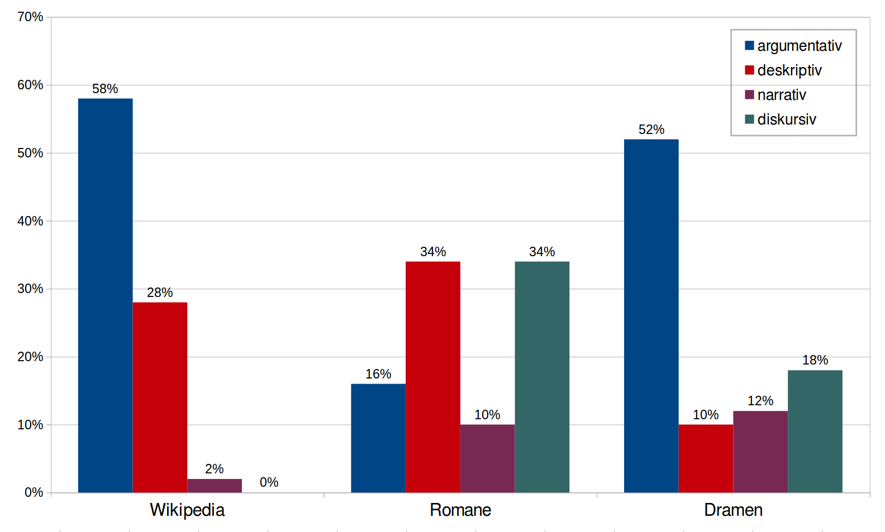
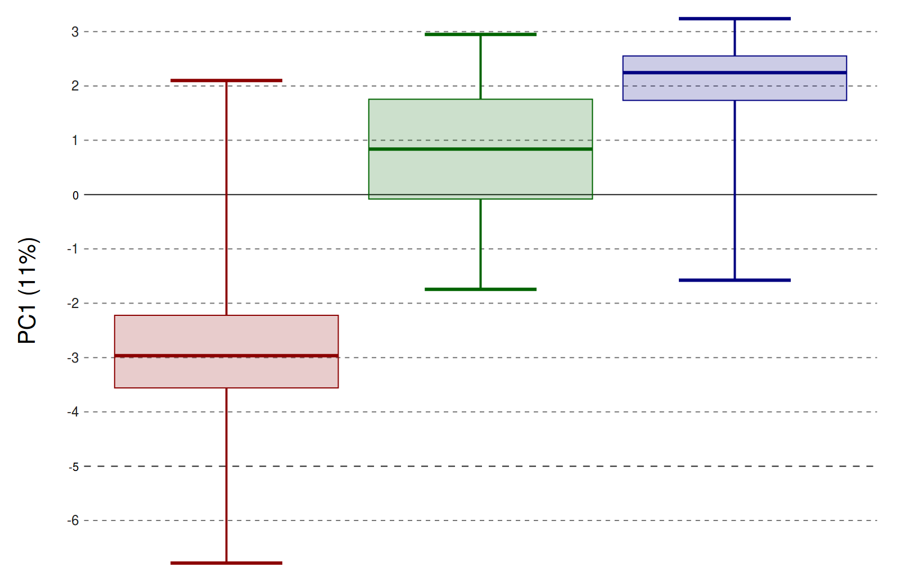

<!doctype html>
<html lang="en">
<head>
<meta charset="utf-8">
<title>Digitale Dramenanalyse</title>
<meta name="author" content="Christof Schöch">
<meta name="description" content="Slides">
<meta name="apple-mobile-web-app-capable" content="yes">
<meta name="apple-mobile-web-app-status-bar-style" content="black-translucent">
<meta name="viewport" content="width=device-width, initial-scale=1.0, maximum-scale=1.0, user-scalable=no, minimal-ui">
<link rel="stylesheet" href="css/reveal.css">
<link rel="stylesheet" href="css/theme/simple.css" id="theme">
<link rel="stylesheet" href="lib/css/zenburn.css">
<script>
var link = document.createElement( 'link' );
link.rel = 'stylesheet';
link.type = 'text/css';
link.href = window.location.search.match( /print-pdf/gi ) ? 'css/print/pdf.css' : 'css/print/paper.css';
document.getElementsByTagName( 'head' )[0].appendChild( link );
</script>
<!--[if lt IE 9]>
<script src="lib/js/html5shiv.js"></script>
<![endif]-->
</head>

<body>
<div class="reveal">
<div class="slides">
<section data-markdown="" data-separator="^\n---\n" data-separator-vertical="^\n--\n" data-charset="utf-8">
<script type="text/template">

<!--  vvvvv THIS IS WHERE THE CONTENT GOES! vvvvvvv  -->

# Topic Modeling und dramatische Gattungen
<hr/>
<br/>
<br/>
<br/>
<small>[Nanette Rißler-Pipka](http://www.ku.de/slf/romanistik/lehrstuehle-professuren/literaturwissenschaft/romanlitwi2/personen/prof-dr-nanette-rissler-pipka/) (Eichstätt) -</small>
<small>[Christof Schöch](http://www.christof-schoech.de/) (Würzburg)</small>
<br/>
<br/>
<br/>
<small>Panel "Aktuelle Herausforderungen der digitalen Dramenanalyse"</small>
<small>Jahrestagung des DHd-Verbands, Bern, 15. Februar 2017</small>

---
## Überblick

1. [Topic Modeling](#/2)
2. [Typen von Topics](#/3)
3. [Topics und Untergattungen](#/4)
4. [Fazit](#/5)

<br/>
<br/>
<small>Folien: [https://christofs.github.io/dramenanalyse-dhd/](https://christofs.github.io/dramenanalyse-dhd/)</small>


---
## 1. Topic Modeling

--
### Topic Model
<a href="img/blei_topic-modeling_result.png"></img></a>
<br/>
<small>Dokumente; Topic-Verteilungen; Wort-Verteilungen</small>


---
## 2. Typen von Topics

--
### Typen von Topics
<br/>
* argumentativ: abstrakte, erkennbare Themen
* narrativ: Erzählmotive (zeitlich)
* deskriptiv: Figuren/Objektbeschreibung, Raumbeschreibung
* diskursiv: Register, Sprache, Rhetorik, Dialog


--
### Beispiel: argumentativ
<a href="img/treemap-novels-0.svg"></img></a>

--
### Beispiel: deskriptiv
<a href="img/treemap-novels-46.svg"></img></a>

--
### Beispiel: narrativ
<a href="img/treemap-novels-3.svg"></img></a>

--
### Beispiel: diskursiv
<a href="img/treemap-novels-9.svg"></img></a>


--
### Ergebnisse
<a href="img/typen-und-gattungen.png"></img></a>


---
## 3. Topics und Untergattungen


--
### Textsammlung
<br/>
* 391 französische Theaterstücke, 1630-1789
* 181 Tragödien, 150 Komödien, 52 Tragikomödien
* aus der Sammlung "Théâtre classique", ed. Paul Fièvre


--
### Verschiedene Modelle
<br/>
* Anzahl der Topics: 50, 60, 70, 80, 90, 100
* Optimierungsintervall für die Hyperparameter: <br/>50, 100, 300, 500, 1000, 2000, 3000, 6000
* insgesamt 48 Modelle
* Auswahl des besten Modells: Klassifikationstask


--
### Evaluierung der Modelle (Auswahl)
<a href="img/classify-performance_topics_subgenre.svg"></img></a>
<br/>
<small>Bestes Modell: 60 Topics, Optimierungsintervall 300 <br/>(10-fache Kreuzvalidierung; Classifier: SVM, SGD, KNN, Decision Trees)</small>

--
### PCA mit Topic-Daten (60 Topics)
<a href="img/scatterplot-pc1-pc2.png"></img></a>
<br/>
<small><font color="darkblue"><font color="darkred">Komödien (rot)</font> - <font color="darkgreen">Tragikomödien (grün)</font> - Tragödien (blau)</font> </small>

--
### Verteilungen in PC1
<a href="img/boxplots-pc1.png"></img></a>
<br/>
<small><font color="darkblue"><font color="darkred">Komödien (rot)</font> - <font color="darkgreen">Tragikomödien (grün)</font> - Tragödien (blau)</font><br/>Alle drei Verteilungen sind hoch signifikant unterschiedlich</small>

--
### Verteilungen in PC2
<a href="img/boxplots-pc2.png"></img></a>
<br/>
<small><font color="darkblue"><font color="darkred">Komödien (rot)</font> - <font color="darkgreen">Tragikomödien (grün)</font> - Tragödien (blau)</font><br/>Tragikomödie signifikant unterschiedlich zu Komödie und Tragödie</small>

---
## Fazit

--
### Fazit

--
### Referenzen

---
# Panel-Diskussion
<hr/>
<br/>
<br/>
<br/>
<br/>
<br/>
<br/>
<br/>
<small>Panel "Aktuelle Herausforderungen der digitalen Dramenanalyse"</small>
<small>Jahrestagung des DHd-Verbands, Bern, Februar 2017</small>
<br/>

--
### Leitfragen (1): Gemeinsamkeiten 
<br/>
* Jede der drei Methoden verfolgt spezifische Fragen und birgt spezifische Herausforderungen.
* In welchem Maße gibt es gemeinsame Forschungsziele, zu denen jede der Methoden einen Beitrag leisten kann?
* Können die verschiedenen Methoden beispielsweise einen Beitrag zu einer empirisch gesicherten Gattungsdifferenzierung oder für die literaturgeschichtliche Periodisierung leisten?
* Wie können Ergebnisse, die mit unterschiedlichen methodischem Vorgehen gewonnen wurden, in Bezug zueinander gesetzt werden?

--
### Leitfragen (2): Standards
<br/>
* Wie können die teils unterschiedliche Anforderungen der Methoden an die Formate von Daten und Metadaten aufgefangen werden?
* Welche konzeptuellen und datenbezogenen Standards für dokumentbezogene Metadaten und strukturelle oder semantische, lokale Annotationen liegen vor?
* Wie kann die Standardisierung (bspw. durch Annotationsrichtlinien) weiter gefördert werden?

--
### Leitfragen (3): Ressourcen
<br/>
* Welche Ressourcen (insbesondere Textsammlungen) liegen vor?
* Wie kann die Verfügbarkeit geeigneter Ressourcen für die Digitale Dramenanalyse zukünftig verbessert werden?
* Welche Tools sind für die digitale Dramenanalyse derzeit verfügbar?
* Wie könnte die Tool-Entwicklung zielgerichtet gefördert werden?
* Welche generischen Tools könnten produktiv eingesetzt werden, wie könnte der Einsatzbereich vorhandener Tools erweitert werden?


---
# Publikums-Diskussion
<hr/>
<br/>
<br/>The floor is yours!
<br/>
<br/>
<br/>
<br/>
<br/>
<small>Panel "Aktuelle Herausforderungen der digitalen Dramenanalyse"</small>
<small>Jahrestagung des DHd-Verbands, Bern, Februar 2017</small>
<br/>


---
<br/>
<br/>
## Vielen Dank! 
<br/>
<br/>
<br/>
<br/>
<br/>
<br/>
<br/>
<small>Christof Schöch, 2017</small>
<br/>
<small><http://www.christof-schoech.de></small>
<br/>
<small><a href="https://creativecommons.org/licenses/by/4.0/">CC-BY 4.0</a></small>
<br/>


<!--^^^^^^^ DON'T TOUCH UNLESS YOU KNOW WHAT YOU'RE DOING :-) ^^^^^^^-->

</script>
</section>
</div>
</div>

<script src="lib/js/head.min.js"></script>
<script src="js/reveal.js"></script>
<script>
// Full list of configuration options available at:
// https://github.com/hakimel/reveal.js#configuration
Reveal.initialize({
    controls: true,
    progress: true,
    history: true,
    center: true,
    transition: 'slide', // none/fade/slide/convex/concave/zoom
    // Optional reveal.js plugins
    dependencies: [
        { src: 'lib/js/classList.js', condition: function() { return !document.body.classList; } },
        { src: 'plugin/markdown/marked.js', condition: function() { return !!document.querySelector( '[data-markdown]' ); } },
        { src: 'plugin/markdown/markdown.js', condition: function() { return !!document.querySelector( '[data-markdown]' ); } },
        { src: 'plugin/highlight/highlight.js', async: true, callback: function() { hljs.initHighlightingOnLoad(); } },
        { src: 'plugin/zoom-js/zoom.js', async: true },
        { src: 'plugin/notes/notes.js', async: true }
        ]
    });
</script>
</body>
</html>
